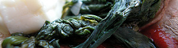

Pizza mit Spinat und Feta
5,5 von 6pellati auf pizzateig verteilen. Spinat zekleinern, fetakäse und
champignons in kleine würfel schneiden. alles auf dem teig verteilen. Salz,
pfeffer und knoblauch (gepresst) beigeben. Ab in den ofen.

pellati auf pizzateig verteilen. Spinat zekleinern, fetakäse und
champignons in kleine würfel schneiden. alles auf dem teig verteilen. Salz,
pfeffer und knoblauch (gepresst) beigeben. Ab in den ofen.

Montagsplausch Nr. 9.